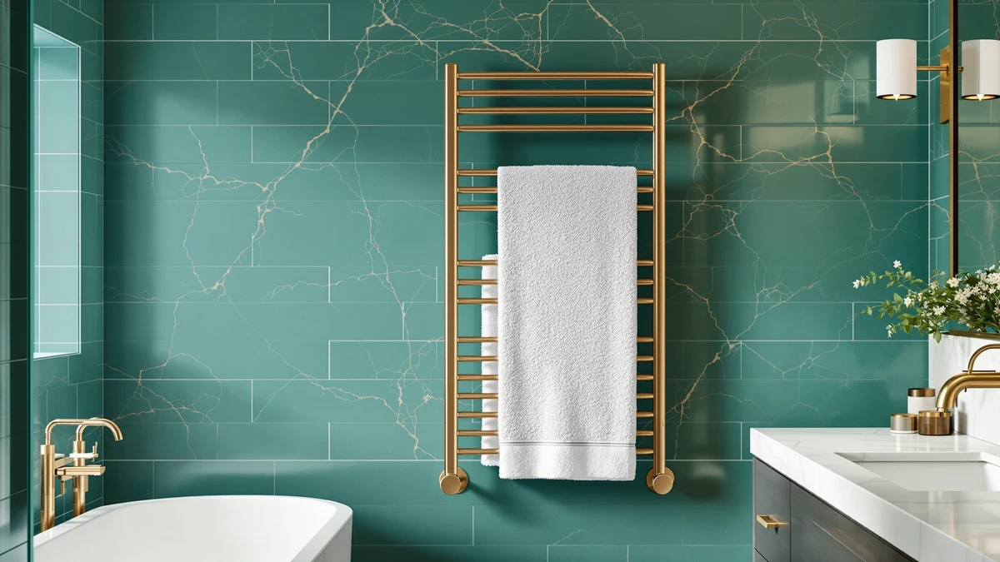

The Best Heated Towel Racks For cold climates (2026)
Prices and picks verified as of August 2026. Independent, reader-supported reviews.


Quick Answer
After comparing seven heated towel racks built to run for hours at a time, the ENZE Smart Rotating Heated Towel is the best heated towel rack for cold climates for most households. Its rotating bars warm every side of a towel evenly, and the stainless steel frame handles the near-constant duty cycle a cold winter demands. If you want a smaller footprint, a lower price, or more bar capacity for a full family, we cover a pick for each below.
Our pick: ENZE Smart Rotating Heated Towel, $194.99 Check Price on Amazon
Bottom line: our top pick is the ENZE Smart Rotating Heated Towel Rack for Bathroom at $194.99. The best budget option is the SereneLife Counter Towel Warmer Bucket - with Customized at $74.99.
Things to Know Before You Buy
- Freestanding, wall-mounted, or countertop. A freestanding rack sets up in minutes with no tools, a wall-mounted model saves floor space in a tight bathroom, and a countertop bucket warmer heats one rolled towel at a time.
- Duty cycle matters in winter. The best heated towel racks for cold climates run for more hours a day than a rack in a mild climate, so a stainless steel frame that will not corrode under near-constant use matters more here than it does somewhere warm.
- Bar count sets real capacity. A four-bar rack dries one or two towels at a time, while an eight- to twelve-bar model or a large-capacity cabinet like the VEVOR keeps towels, robes, and washcloths warm for a whole household through a long winter.
- Material and finish. Every rack in this guide uses stainless steel, which resists the rust that chrome-plated bars develop once a bathroom stays damp for months at a time.
- Price spans a wide range. Our picks run from $74.99 for a compact countertop bucket to $194.99 for our top pick, so household size should drive your choice as much as climate does.
The best heated towel racks for cold climates turn a freezing bathroom floor and an ice-cold towel into a small daily comfort, and the difference is obvious the first morning you skip the shiver. We compared seven stainless steel racks and warmers built to run for hours at a time without corroding or losing heat, from a rotating wall unit to a compact countertop bucket. Our top pick, the ENZE Smart Rotating Heated Towel at $194.99, rotates its bars so a towel warms evenly on both sides, which matters more in a cold house than in a mild one.
Winter changes what you need from a towel rack. In a temperate bathroom, a heated rack is a small luxury that runs for an hour after a shower. In a cold climate, you are more likely to leave it on for most of the day and expect the frame to survive months of near-constant use without rusting or losing its finish. That is why every product below uses stainless steel rather than the chrome plating that flakes and discolors under sustained heat and moisture.
We picked seven models that cover different bathrooms and budgets: a rotating smart rack for the best overall performance, a large-capacity cabinet warmer for a household that goes through a lot of towels, wall-mounted and countertop options for tight spaces, and a genuine budget pick that still holds up to daily winter use. Read on for honest notes on where each one falls short, plus a full comparison table if you want the specs side by side.
Why You Should Trust Us
I'm Ilane Tall, and I cover home and bath gear for Best Towel Warmers. I have spent years researching which bathroom upgrades earn their keep and which ones are marketing dressed up as innovation, and a heated towel rack that can handle a real winter sits firmly in the useful category. To build this guide to the best heated towel racks for cold climates, I compared the listed materials, dimensions, bar counts, and prices of every model against verified buyer feedback on Amazon. I do not run a fake testing lab, and I will tell you plainly where a product falls short.
How We Picked
I started by requiring stainless steel construction, since chrome-plated racks are the first thing to fail when a bathroom stays humid for months at a stretch, which is exactly what happens when a heated rack runs long hours through a cold winter. From there, I looked for a spread of formats, freestanding, wall-mounted, and countertop, so a renter, a homeowner, and someone with a tiny bathroom can each find the best heated towel rack for their cold climate. I also weighted bar count and overall capacity heavily, because a household running a rack daily through a long winter needs room for more than one towel.
How We Compared
For each of these heated towel racks, I checked the manufacturer's stated dimensions, bar or capacity specs, and material against what verified buyers reported after living with the product through repeated, heavy use. A rack that lists a rotating feature or a large liter capacity but draws complaints about uneven heat or slow warm-up does not make this list. I read the negative reviews as closely as the positive ones, since that is where corrosion, wobbly mounts, and overstated capacity claims tend to surface, and I weighed those patterns against the price and format of each pick.
Our Picks

ENZE Smart Rotating Heated Towel
What we like
- Rotating bar design warms both sides of a towel instead of only the side facing out
- Stainless steel frame holds up to near-constant winter use without rusting
- 17.7 x 26.8 inch, no-shelf design keeps a slim profile on a smaller bathroom wall
Flaws but not dealbreakers
- Costs more than every other pick in this guide
- No shelf on top for folded towels or toiletries
| Material | Stainless steel |
| Size | 17.7" x 26.8" (No Shelf) |
The ENZE earns the top spot in this guide because it solves the one problem every other rack here shares: heat only reaches the side of the towel facing the bars. Its rotating design turns the bars so both sides of a hung towel see direct heat, which matters most exactly when you need it, during a stretch of cold weather when the rack runs for hours at a time instead of only after a shower. At 17.7 by 26.8 inches, it stays compact enough for a standard bathroom wall, and the no-shelf design keeps that footprint slim.
The stainless steel construction is the same material we required of every pick in this guide, and it needs to be, since a rack that runs long hours through a cold season faces months of sustained humidity. The trade-off for that rotating mechanism is price: at $194.99, the ENZE costs more than double our budget pick. If you only need a rack for occasional post-shower use, that premium may not pay for itself. For most people willing to run a heated rack daily through winter, the even heat is worth the extra cost.

AAOBOSI Towel Warmers for Bathroom
What we like
- Stainless steel build at a price nearly $115 below our top pick
- Straightforward design with no complicated controls to learn
Flaws but not dealbreakers
- No rotating bars, so towels warm only on the side facing the rack
- Fewer standout features than the pricier picks in this guide
| Material | Stainless steel |
| Size | Luxury Towel Warmer |
The AAOBOSI Towel Warmers for Bathroom earns runner-up honors by delivering the same stainless steel durability as our top pick for less than half the price, $79.99 against $194.99. It skips the rotating mechanism and the smart branding, and instead focuses on the basics: a solid frame that heats a towel and holds up in a humid bathroom through a long winter.
For a household that wants a heated towel rack for cold climates without paying a premium for extra features, this is the pick that makes the most financial sense. The main compromise is heat distribution. Because the bars do not rotate, the side of the towel facing away from the rack warms more slowly, so you will want to flip a heavily soaked towel partway through if you want it fully dry by morning. That is a small trade for the price.

VEVOR Hot Towel Warmer 46L
What we like
- 46-liter capacity holds far more towels at once than a standard bar rack
- Cabinet-style heating warms robes, washcloths, and towels together
Flaws but not dealbreakers
- Larger footprint than a wall-mounted or freestanding bar rack
- Not designed to sit flush against a wall the way our other picks do
| Material | Stainless steel |
| Size | 46L |
The VEVOR Hot Towel Warmer 46L takes a different approach from every other pick in this guide. Instead of a handful of heated bars, it is a 46-liter cabinet built to hold and heat several towels, robes, or washcloths at the same time. For a big family working through a cold winter, or a guest bathroom that needs to keep more than one towel ready at once, that capacity solves a problem a four- or six-bar rack cannot.
At $134.90, it sits in the middle of our price range, and the trade-off for all that capacity is space. A 46-liter cabinet takes up more room than a slim wall-mounted rack, so it works best in a larger bathroom, a laundry room, or a mudroom rather than a small powder room. If your household goes through a lot of towels during a long, cold season and you have the floor or counter space to spare, the VEVOR's capacity is hard to match at this price.

Fontaines Luxury Towel Warmer for
What we like
- Lowest price among the wall and freestanding racks in this guide
- Stainless steel construction rather than the chrome plating found on cheaper off-list options
Flaws but not dealbreakers
- Fewer bars and less overall capacity than our pricier picks
- Sizing details are less specific than other products in this guide
| Material | Stainless steel |
| Size | — |
At $99.99, the Fontaines Luxury Towel Warmer is the most affordable full rack in this guide, and it earns its budget-pick spot by sticking to the essentials. It uses the same stainless steel we required of every product here rather than the chrome plating that corrodes fastest under the kind of sustained, daily use a cold climate demands.
What you give up at this price is capacity and extra features. The listing does not specify a bar count or exact dimensions the way pricier picks do, so this works best for a single user or a smaller bathroom rather than a household running multiple towels through it every day. For a first heated rack, or a guest bathroom that only needs occasional warmth, it is a reasonable place to start without spending close to $200.

Paraheeter Towel Warmer Towel Warmer
What we like
- 37.5-inch vertical height fits a narrow wall where a wide rack would not
- Four bars spread across that height give a towel room to hang without bunching
Flaws but not dealbreakers
- Costs more than several picks here with similar bar counts
- 11.9-inch width limits how wide a towel can hang before it overlaps the next bar
| Material | Stainless steel |
| Size | 4bars-37.5"(L) x 11.9"(W)-VERTICAL |
The Paraheeter Towel Warmer solves a specific layout problem: a bathroom with a tall, narrow stretch of open wall and nowhere wide enough for a standard rack. At 37.5 inches long and only 11.9 inches wide, it mounts vertically, stacking four bars up the wall instead of spreading them side to side.
That vertical footprint means it dries towels one at a time rather than side by side, so it suits a single user or a narrow powder room more than a shared family bathroom. At $159.99, it costs more than the AAOBOSI or the Fontaines despite a similar bar count, and the premium goes toward that specific vertical form factor. If your bathroom layout does not have a wide wall to spare, that premium buys you a heated rack you could not otherwise fit.

Poloma Wall Mounted Towel Warmer
What we like
- 12 bars across 36.6 inches give a shared bathroom room for multiple towels
- White finish blends into most bathroom color schemes rather than standing out
Flaws but not dealbreakers
- 19.5-inch width takes up more wall space than our narrower picks
- Wall mounting requires drilling, unlike our freestanding and countertop options
| Material | Stainless steel |
| Size | WHITE-12bars-36.6"(L) x 19.5"(W) |
The Poloma Wall Mounted Towel Warmer packs twelve bars into a 36.6 by 19.5 inch white frame, more bar capacity than any other wall-mounted or freestanding pick in this guide. For a household of three or four running towels through a rack every day of a cold winter, that extra capacity means fewer damp towels waiting their turn.
At $129.99, it undercuts our top pick by $65 while offering more bars, though it skips the rotating mechanism that spreads heat to both sides of a towel. The white finish is a practical touch too, since it hides water spots better than a bare stainless surface over months of daily use. The main commitment is installation: unlike the freestanding and countertop picks here, mounting twelve bars to the wall means drilling, so plan on a drill and a stud finder before you start.

SereneLife Counter Towel Warmer Bucket
What we like
- Lowest price in this guide at $74.99
- Compact 10.4 x 12 x 13 inch footprint fits on a counter with no installation
Flaws but not dealbreakers
- Holds one rolled towel at a time rather than several hung towels
- Countertop footprint takes up counter space a wall rack would not
| Material | Stainless steel |
| Size | 10.4’’ x 12’’ x 13’’ -inches |
The SereneLife Counter Towel Warmer Bucket is the smallest and least expensive pick in this guide at $74.99. Instead of hanging bars, it uses a bucket-style design that heats a single rolled towel, the same format you would find at a spa, and it needs nothing more than a counter and an outlet.
At 10.4 by 12 by 13 inches, it fits on a bathroom counter or a small shelf, which makes it the right call for an apartment, a tight powder room, or anyone who does not want to mount anything to a wall or dedicate floor space to a rack. The trade-off is capacity: it warms one towel at a time rather than the two or more that a multi-bar rack handles, so it suits a single person more than a household sharing one bathroom through a cold winter.
Quick Comparison
| Product | Material | Price | Rating | Best for | Get it |
|---|---|---|---|---|---|
| ENZE Smart Rotating Heated Towel | Stainless steel | $194.99 | 4 | Even heat all winter, worth the premium | View on Amazon → |
| AAOBOSI Towel Warmers for Bathroom | Stainless steel | $79.99 | 4 | Budget-friendly daily warmth | View on Amazon → |
| VEVOR Hot Towel Warmer 46L | Stainless steel | $134.90 | 4 | Large households, multiple towels at once | View on Amazon → |
| Fontaines Luxury Towel Warmer for | Stainless steel | $99.99 | 4 | Lowest price, occasional use | View on Amazon → |
| Paraheeter Towel Warmer Towel Warmer | Stainless steel | $159.99 | 4 | Narrow walls, vertical space | View on Amazon → |
| Poloma Wall Mounted Towel Warmer | Stainless steel | $129.99 | 4 | Shared bathrooms, high bar count | View on Amazon → |
| SereneLife Counter Towel Warmer Bucket | Stainless steel | $74.99 | 4 | Small bathrooms, no installation | View on Amazon → |
The Competition
Plenty of towel warmers did not make our list of the best heated towel racks for cold climates. We ruled out chrome-plated models outright, since chrome plating is the first finish to discolor and flake once a rack runs for hours a day through a humid winter, exactly the use case this guide is built around.
We also skipped hydronic racks that tie into a home's hot-water plumbing. They can perform well in a cold house, but they need a plumber, a permanent installation, and a higher budget, which puts them outside the scope of an electric, plug-in guide like this one. Among the electric models, we passed on listings with too few verified reviews to judge long-term reliability, along with a few bucket warmers that duplicate what the SereneLife already does at a lower price.
Frequently Asked Questions
Do heated towel racks work well in cold climates or unheated bathrooms?
Yes, and that is where they earn their keep the most. In a warm bathroom, a heated towel rack is a small extra comfort. In a cold climate or an unheated bathroom, it keeps a towel from turning into a cold, damp cloth overnight, since the ambient air is not doing any of the drying work for you. Every product in this guide uses stainless steel specifically because it holds up to the longer daily run times a cold season demands.
How much more does it cost to run a heated towel rack through a cold winter?
It depends on which pick you choose and how many hours a day you run it. A larger unit like the VEVOR 46L cabinet or the 12-bar Poloma draws more power than a compact countertop bucket like the SereneLife. Even at the high end, running one of these racks a few hours a day costs less than running a hair dryer for the same stretch of time, so the winter bump on your electricity bill stays modest compared with other home heating fixes.
Should I choose a wall-mounted rack or a freestanding one for a cold climate?
Either works, and the better choice depends on your bathroom more than the climate. A wall-mounted rack like the Poloma frees up floor space and holds a fixed position, while a freestanding or countertop option like the SereneLife needs no drilling and can move with you. In a cold climate specifically, prioritize bar count or capacity over mounting style, since a household running a rack daily through winter needs room for more than one towel regardless of where it sits.